화면이 움직이는 원리: 프레임과 델타 타임
영상은 발판 끝에서 점프를 눌렀는데 그냥 떨어지는 장면으로 시작해요. 느리게 돌려 보면 그때 캐릭터는 이미 발판 밖에 있었어요. 그런데 잘 만든 게임은 이 점프를 몰래 받아 줘요. 이런 장치마다 이름이 있고, 이름을 알면 AI에게 시키는 말이 달라진다는 게 영상의 출발점이에요.
왼쪽 카드가 출발 문장이에요. 오른쪽 카드는 끝에서 이 문장을 다시 쓸 때 채워야 할 세 가지, '무엇을', '얼마나', '어떻게 확인'을 미리 보여 줘요. 느낌만 보내면 AI는 뭘 고칠지 짐작부터 해야 하고, 답답하다고 했다가 하늘을 나는 점프를 받을 수도 있어요.
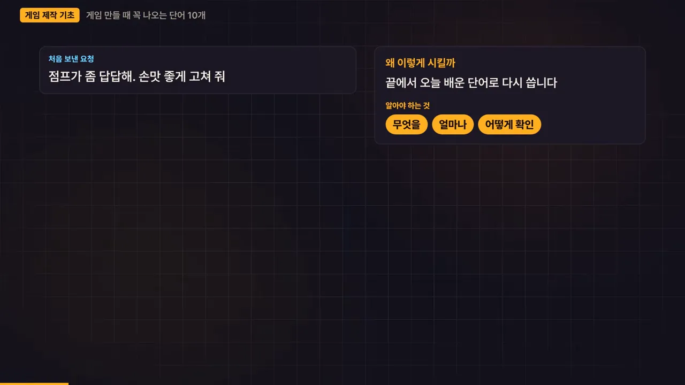
프레임과 FPS
게임 화면은 사실 움직이지 않아요. 멈춘 그림을 빠르게 갈아 끼울 뿐이고, 그 그림 한 장이 프레임이에요. 1초에 몇 장을 그리는지가 FPS(Frames Per Second)예요. 아래 화면은 같은 움직임을 4배 느리게 돌린 거예요. 10 FPS 줄은 캐릭터 잔상이 띄엄띄엄 끊겨 있고, 60 FPS 줄은 잔상이 촘촘하게 붙어 있어요.
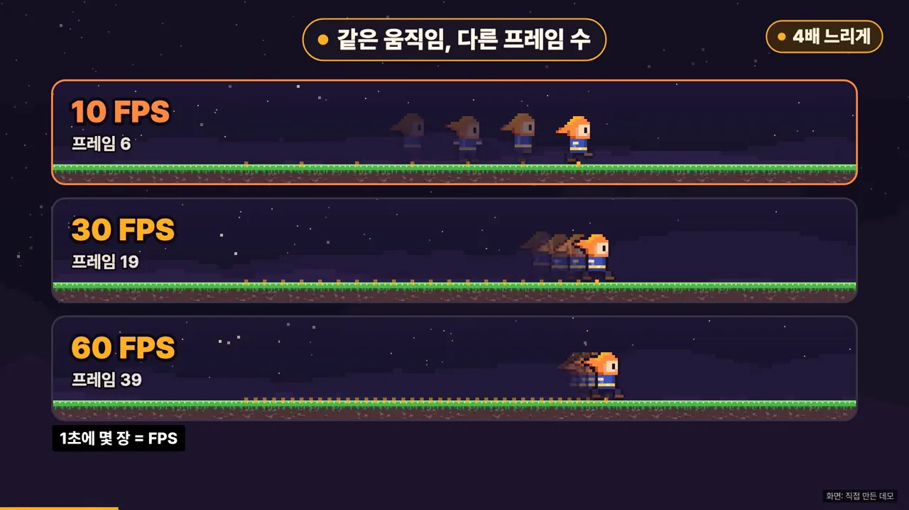
프레임 단위로 짜면 생기는 함정
캐릭터를 프레임마다 4px 움직이게 짜면 어떻게 될까요? 60Hz 모니터는 1초에 60번 그리니 240px를 가요. 144Hz 모니터는 같은 1초에 144번 그리니 576px를 가요. 화면 오른쪽 아래 빨간 배지가 '144Hz 쪽이 2.4배 멀리'라고 짚어 줘요. 비싼 모니터를 산 사람만 하드 모드를 하는 셈이에요.
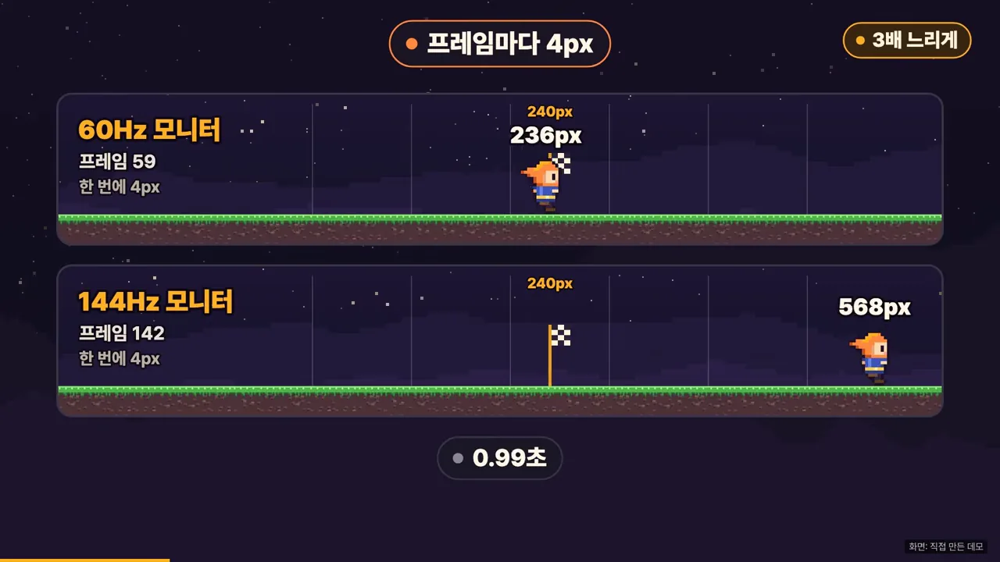
영상은 주사율마다 1초 동안 간 거리를 데모 코드 그대로 재서 막대로 보여 줘요. 주황 막대 다섯 개는 30Hz 120px부터 240Hz 960px까지 주사율에 정확히 비례해요. 맨 오른쪽 회색 막대가 델타 타임을 곱한 쪽인데, 어느 주사율에서나 240px로 같아요.
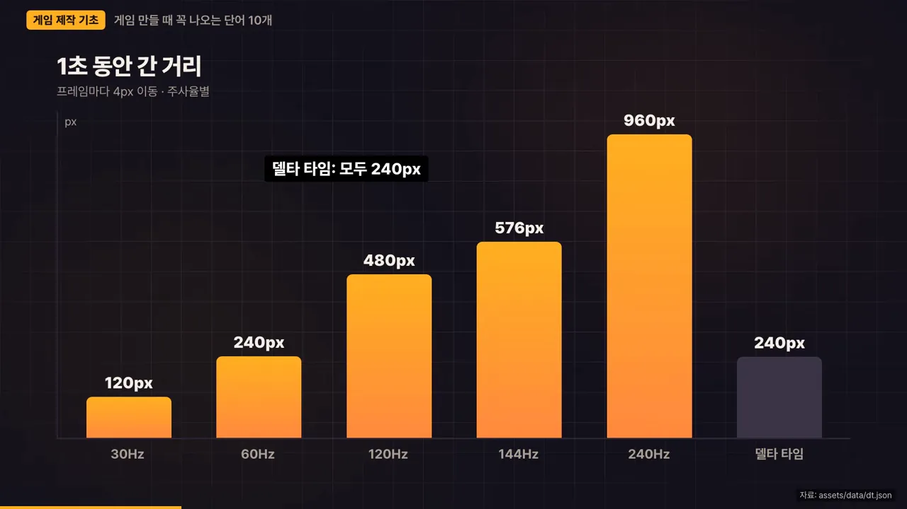
델타 타임
델타 타임은 지난 프레임부터 지금까지 흐른 시간이에요. 속도를 '프레임당 4px'가 아니라 '초당 240px'로 두고 여기에 흐른 시간을 곱하면, 모니터가 빠르든 느리든 1초에 가는 거리가 같아져요. 아래 데모에서 60Hz는 한 번에 4px, 144Hz는 한 번에 1.67px씩 가요. 그래서 1.00초에 둘 다 240px 깃발에 정확히 서요.
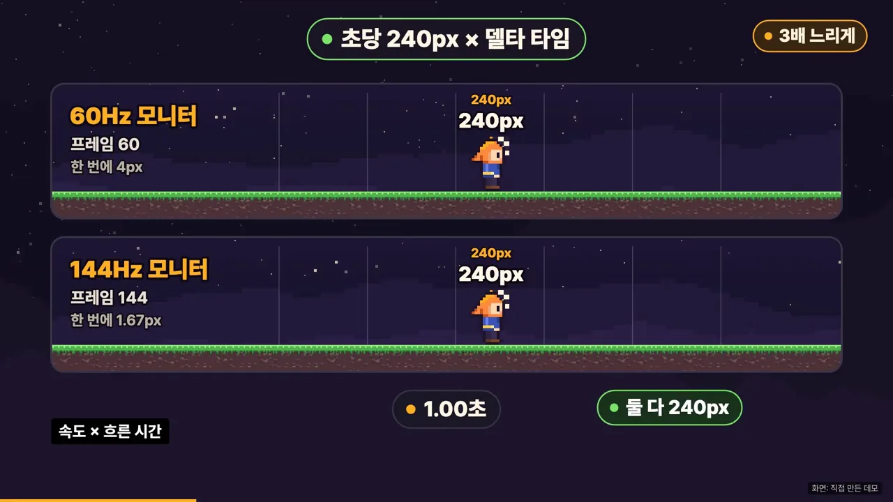
거의 모든 게임 엔진이 매 프레임 이 값을 따로 넘겨 주는 이유가 여기 있어요. 영상은 이 문제를 깊이 다룬 고전으로 Glenn Fiedler가 2004년에 쓴 「Fix Your Timestep!」을 꼽아요. 물리 계산만큼은 고정된 간격으로 돌리라는 내용까지 담겨 있다고 해요.
게임 루프와 히트박스
지금까지 이야기한 일이 모두 도는 바퀴가 게임 루프예요. 입력을 읽고, 세상을 한 칸 업데이트하고, 화면에 그려요. 이걸 1초에 수십 번 되풀이해요. 오른쪽 원이 그 바퀴인데, 지금은 '업데이트(위치 계산)' 칸에 불이 들어와 있어요. 가운데 숫자는 몇 바퀴째인지, 곧 몇 번째 프레임인지예요.
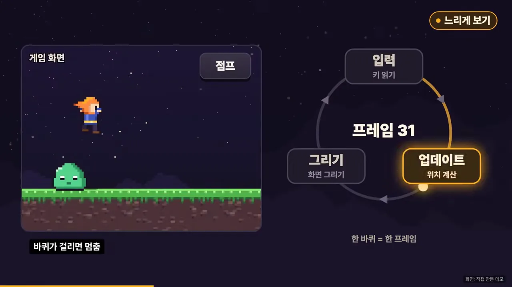
게임이 멈췄다면 대개 이 바퀴 어딘가가 걸렸다는 뜻이에요. 거창한 게임 엔진도 결국 이 바퀴를 열심히 돌리는 장치예요. 영상은 Robert Nystrom의 『Game Programming Patterns』에도 이 바퀴가 그림으로 나오고, 60 FPS면 한 프레임에 쓸 시간이 약 16밀리초라는 계산도 나온다고 짚어요. 1초를 60으로 나누면 16.7밀리초쯤 되니까, 입력·업데이트·그리기를 모두 이 안에 끝내야 해요.
히트박스: 그림 대신 상자로 판정
게임은 그림끼리 부딪혔는지 직접 보지 않아요. 그림보다 단순한 상자를 붙여 두고 상자끼리 겹쳤는지만 봐요. 이 상자가 히트박스예요. 아래 화면에서 주인공은 파란 상자, 적은 빨간 상자, 동전은 노란 상자로 판정 영역을 키워서 보여 줘요. 픽셀을 하나하나 비교하는 것보다 훨씬 빨라서 이렇게 해요.
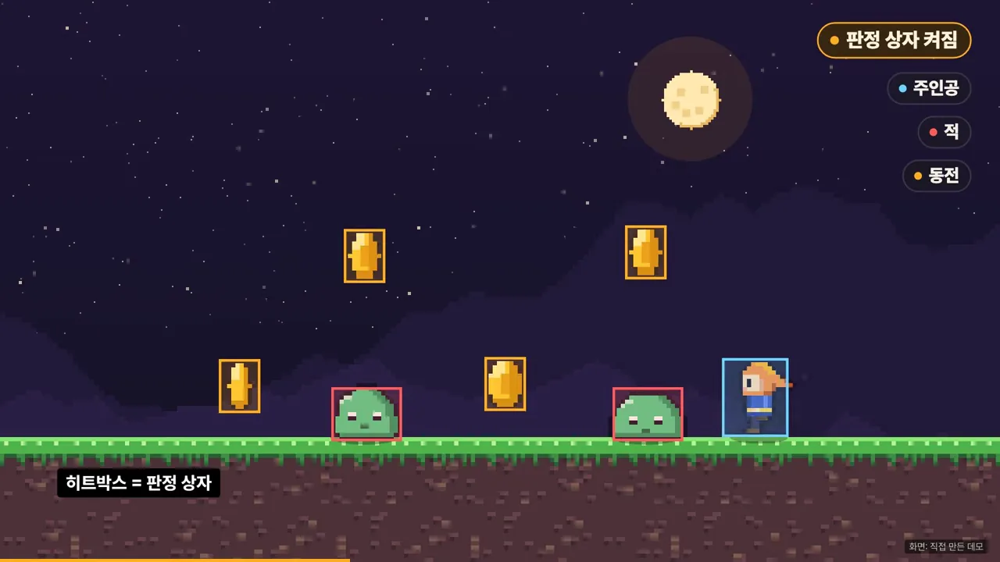
그럼 상자를 그림에 딱 맞추면 공정할까요? 왼쪽 빨간 테두리 화면은 그림 그대로 판정해서, 가시가 발끝만 스쳤는데 '억울!'이 떠요. 오른쪽 초록 테두리 화면은 판정을 살짝 작게 잡아서 같은 점프가 '통과'예요.
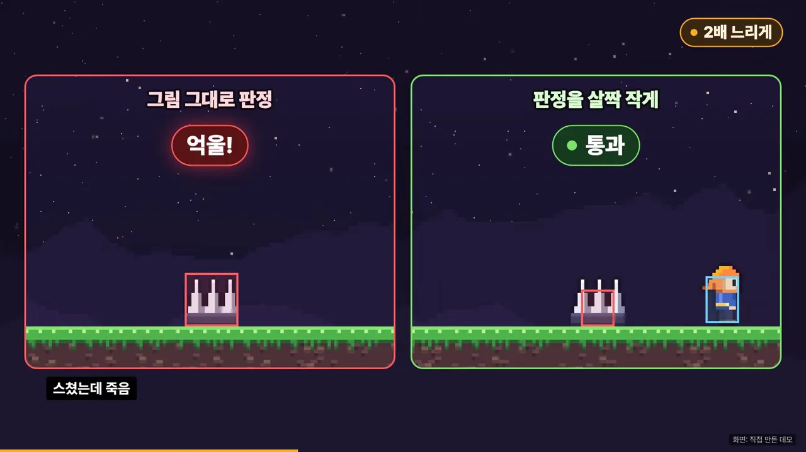
그래서 많은 게임이 내 캐릭터 히트박스를 그림보다 살짝 작게 잡아요. 영상의 설명은 이래요. 플레이어는 공정한 판보다 아슬아슬하게 산 판을 기억한다는 거예요.
격투 게임은 상자를 한 종류만 쓰지 않아요. 아래 그림에서 몸 전체를 덮은 초록 상자가 맞는 영역, 뻗은 주먹에 붙은 빨간 상자가 때리는 영역이에요. 빨간 상자가 다른 캐릭터의 초록 상자에 닿아야 맞은 거예요.
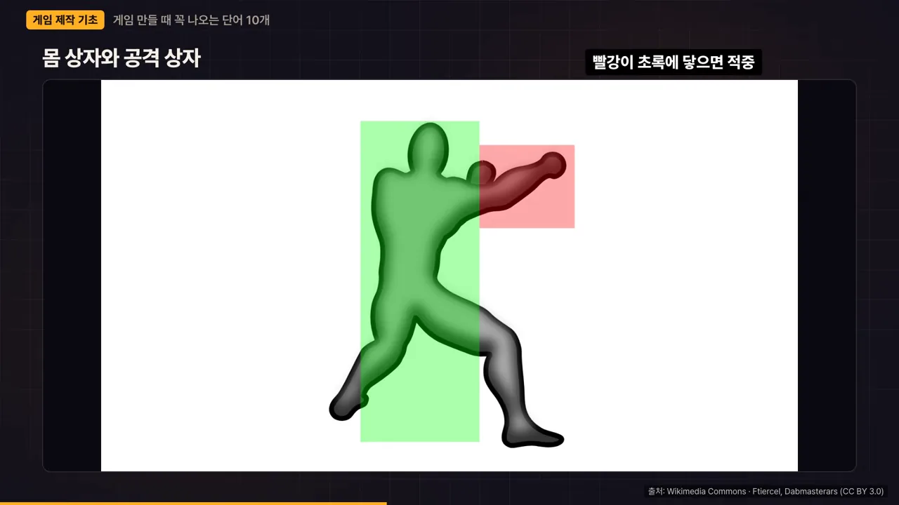
점프를 봐주는 두 장치: 코요테 타임과 입력 버퍼
이제 처음 장면으로 돌아가요. 발판을 벗어난 뒤에도 아주 잠깐은 점프를 받아 주는데, 이게 코요테 타임이에요. 만화 속 코요테가 허공에 잠깐 서 있다가 떨어지는 장면에 빗댄 이름이에요. 보통 0.1초 안팎이라 플레이어는 봐준 줄도 몰라요.
아래 데모는 코요테 타임을 0.12초로 잡았어요. 캐릭터는 이미 구덩이 위에 떠 있고, 발판을 벗어나고 0.10초 뒤에 점프를 눌렀어요. 오른쪽 아래 막대를 보면 '발판 끝' 뒤로 노란 '점프 허용 0.12초' 구간이 있고, 누른 시점(초록 마름모)이 그 안에 들어가서 '점프 성공'이 떠요.
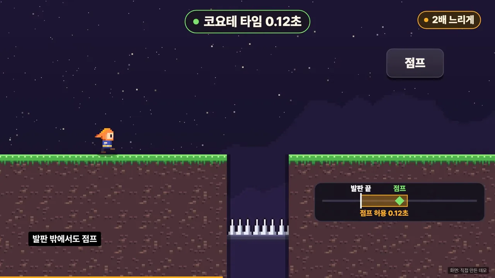
셀레스트가 실제로 쓰는 숫자
조작감 좋기로 이름난 플랫포머 셀레스트도 이 장치를 써요. 만든 사람 Maddy Thorson이 직접 쓴 글 「Celeste & Forgiveness」에서 코요테 타임이 1번 항목이에요. 화면에 빨간 테두리로 짚은 문장이 '발판을 떠난 뒤에도 잠깐은 점프할 수 있다'는 뜻이에요.
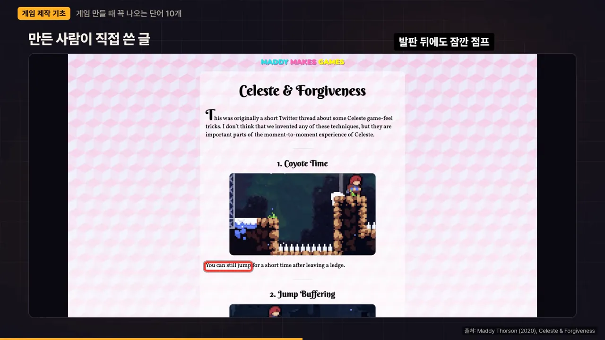
공개된 셀레스트 코드를 열면 숫자도 있어요. 48번 줄 JumpGraceTime = 0.1f, 점프를 봐주는 시간이 딱 0.1초예요. 내가 잘해서 된 줄 알았던 점프 중 몇 개는 코드가 봐준 거였어요.
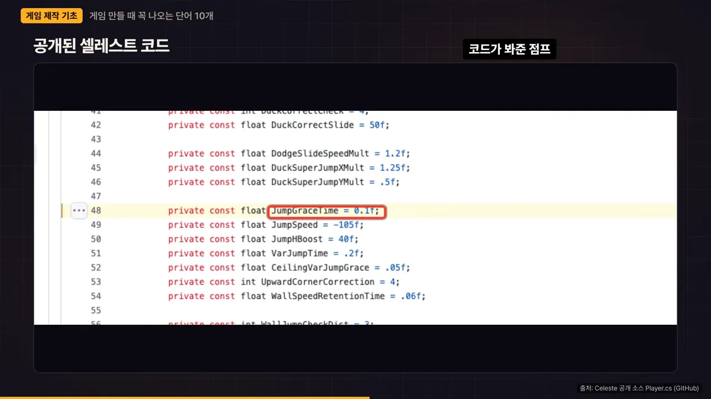
입력 버퍼: 반대쪽 장치
코요테 타임이 발판을 떠난 '뒤'를 봐준다면, 입력 버퍼는 땅에 닿기 '전'을 봐줘요. 착지 직전에 누른 점프를 버리지 않고 들고 있다가, 닿는 순간 실행해요. 아래 데모는 착지 0.08초 전에 점프를 눌렀어요. 왼쪽 '입력 버림'(버퍼 없음)은 이 입력을 그냥 버려서 캐릭터가 땅에 서 있어요. 오른쪽 '입력 버퍼'(0.10초)는 입력을 기억했다가 착지하자마자 다시 뛰어올라요.
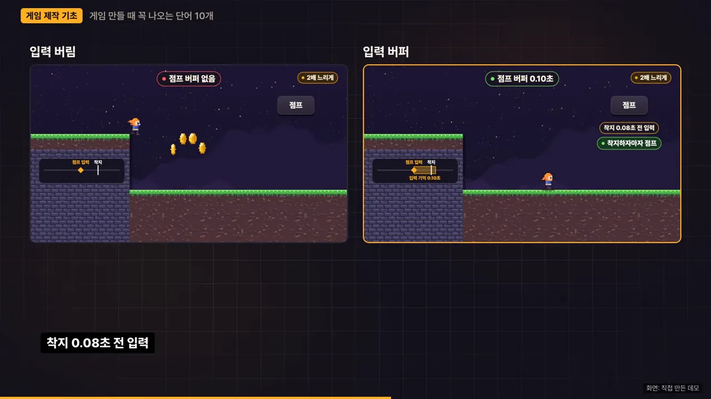
두 장치를 한 줄에 놓으면 이렇게 돼요. 둘 다 '플레이어가 의도한 점프'를 짧은 시간 창으로 받아 주는 장치이고, 창이 발판 끝 뒤에 붙느냐 착지 앞에 붙느냐만 달라요. 이게 없으면 리뷰란에 '조작감 최악'이 달린다는 게 영상의 말이에요.
캐릭터를 움직이는 스프라이트 시트와 상태 머신
캐릭터 그림은 보통 한 장에 모아 둬요. 달리기와 점프 동작을 바둑판처럼 붙인 그림이 스프라이트 시트예요. 아래 화면 왼쪽이 12칸짜리 시트이고, 지금 3번 칸에 노란 테두리가 있어요. 오른쪽 화면에는 그 3번 그림이 크게 떠 있어요. 가운데 화살표의 '초당 7.5장'이 칸을 넘기는 속도예요.
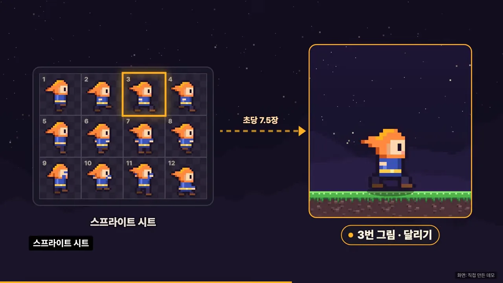
그림을 파일 하나로 묶어 두면 불러오기도 그리기도 빨라져요. 실제로 공개된 스프라이트 시트 하나를 열면 걷는 동작 하나에 그림이 29장 들어 있어요. 한 걸음에 이만큼 손이 가는 거예요.
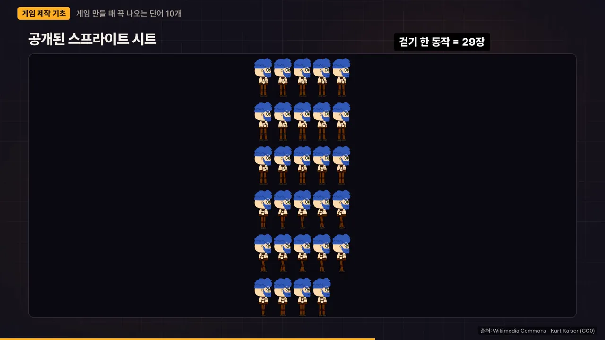
상태 머신: 지금 상태 하나만
그럼 지금 어느 칸을 보여 줄지는 누가 정할까요? 서 있는지, 달리는지, 뛰는지 지금 상태 하나만 고르는 장치가 상태 머신이에요. 아래 그림 오른쪽에 대기·달리기·점프·낙하 네 상태가 있고, 화살표마다 넘어가는 조건(방향키, 키 뗌, 점프 키, 올라가기 끝, 착지)이 적혀 있어요. 점프 키를 누른 지금은 '점프'에 불이 들어와 있어요.
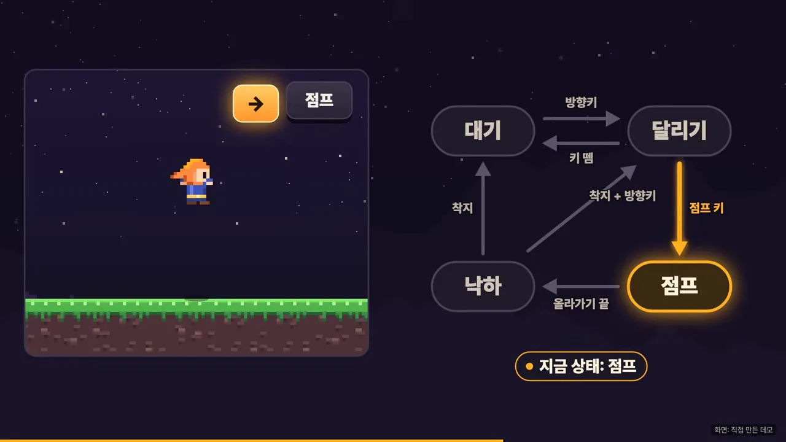
점프 중에는 다시 점프할 수 없고, 땅에 닿아야 대기로 돌아오는 식이에요. 공중에서 무한 점프하는 버그는 대개 이 규칙이 빠져서 생겨요. 『Game Programming Patterns』의 상태 장도 하늘에서 계속 점프하는 버그로 시작해요. 영상은 AI에게 점프만 만들어 달라고 하면 이 버그가 덤으로 따라오기도 한다고 경고해요.
셀레스트 공개 코드에서는 주인공 상태가 StNormal = 0부터 쭉 이어져요. 공개된 버전 기준으로 마지막 StAttract = 22까지 23개예요. 상단 자막 '우리는 아직 4개'처럼, 네 개로 시작한 데모 캐릭터는 갈 길이 멀어요.
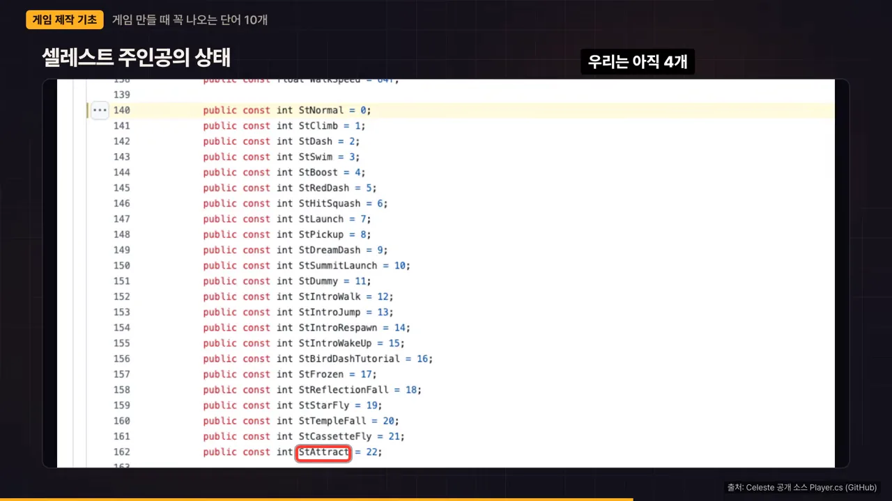
같은 맵을 만드는 시드, 손맛을 만드는 주스
로그라이크 맵은 판마다 새로 만들어져요. 그런데 컴퓨터 난수는 정해진 계산이라, 시작 숫자가 같으면 결과도 같아요. 이 시작 숫자가 시드예요. 아래 화면에서 노란 테두리 두 칸은 시드 42를 두 번 넣은 결과라 방 배치까지 똑같은 '같은 지도'예요. 파란 테두리 칸은 시드 7이라 '다른 지도'가 나왔어요.
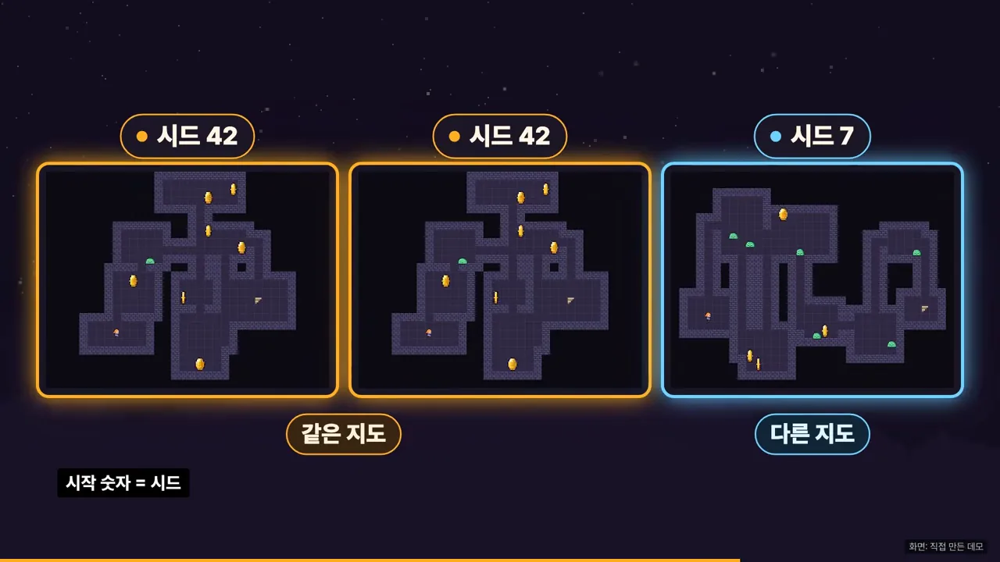
마인크래프트에서 친구와 같은 시드를 넣으면 같은 세계가 나오는 것도 이 원리예요. 영상은 시드가 버그를 잡을 때도 쓸모 있다고 해요. 시드를 적어 두면 문제가 난 판을 그대로 다시 볼 수 있고, 같은 자리에서 또 죽는 것까지 재현돼요.
주스: 판정은 그대로, 손맛만 바꾸기
마지막 단어는 주스예요. 아래 화면은 같은 공격을 두 번 보여 줘요. 왼쪽 '효과 없음'은 칼을 휘둘러도 조용해요. 오른쪽 '주스 넣음'은 데미지 숫자 31이 튀어 오르고, 오른쪽 위 목록에 켜 둔 효과들이 줄지어 있어요. 영상의 말대로 오른쪽이 훨씬 세 보여요.
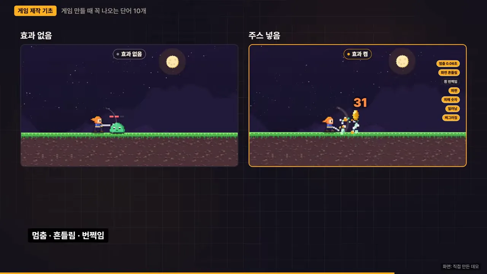
때리는 순간 화면을 아주 잠깐 멈추는 건 히트스톱이라고 따로 불러요. 스매시브라더스를 만든 사쿠라이 마사히로는 히트스톱 기법만으로 영상 한 편을 따로 만들었어요. 주스라는 말을 널리 퍼뜨린 발표는 Martin Jonasson과 Petri Purho의 「Juice it or lose it」이에요. 밋밋한 벽돌 깨기에 효과만 하나씩 더해 가며 같은 게임이 얼마나 달라지는지 보여 줬어요.
다만 효과가 너무 많으면 정작 봐야 할 정보가 가려져요. 적이 어디 있는지는 몰라도 손맛은 최고인 게임이 되는 거예요.
단어로 다시 쓴 AI 요청
영상은 열 단어를 두 묶음으로 정리해요. 앞의 다섯 개는 화면과 판정, 그리고 봐주는 시간이에요. 아래 화면의 표가 단어마다 한 줄 정의를 붙여 놨어요.
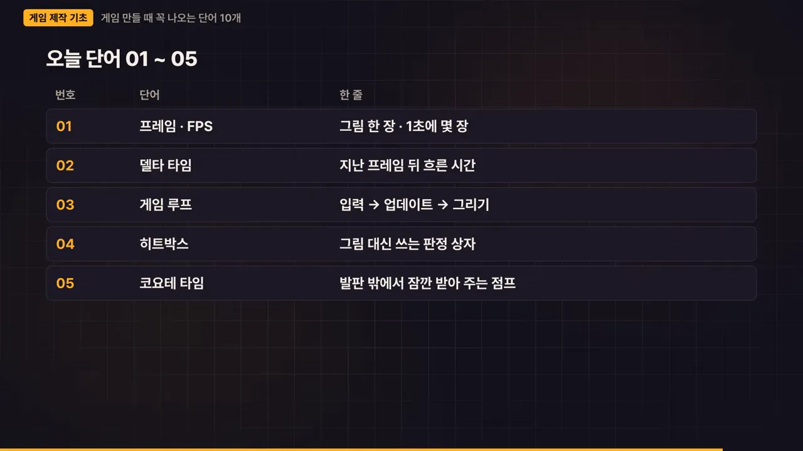
뒤의 다섯 개는 입력, 캐릭터, 맵, 손맛에 관한 단어예요.
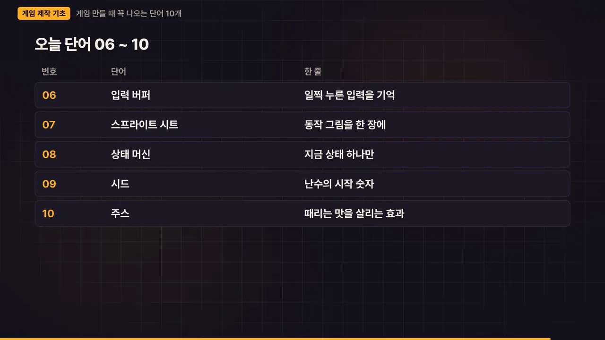
처음 요청을 다시 쓰면
처음 문장은 '점프가 좀 답답해. 손맛 좋게 고쳐 줘'였어요. 이제는 아래 왼쪽 카드처럼 보낼 수 있어요. 오른쪽 카드는 이렇게 쓰는 이유를 '느낌 대신 고칠 자리와 확인 방법'이라고 요약하고, 알아야 하는 단어로 코요테 타임, 입력 버퍼, 델타 타임, 히트박스 네 개를 달아 놨어요.
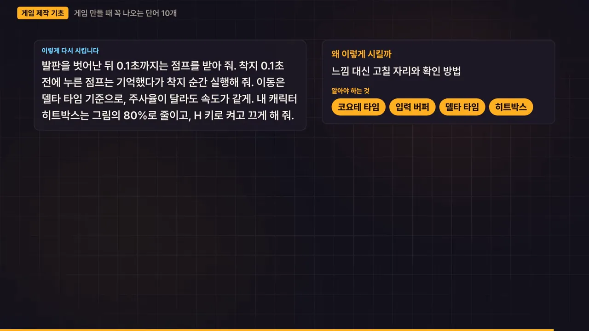
영상이 짚은 대로 줄마다 어떤 단어 때문에 들어갔는지 맞춰 보면 이래요.
| 요청 문장 | 단어 | 담긴 것 |
|---|---|---|
| 발판을 벗어난 뒤 0.1초까지는 점프를 받아 줘 | 코요테 타임 | 고칠 자리와 숫자(0.1초) |
| 착지 0.1초 전에 누른 점프는 기억했다가 착지 순간 실행해 줘 | 입력 버퍼 | 고칠 자리와 숫자(0.1초) |
| 이동은 델타 타임 기준으로, 주사율이 달라도 속도가 같게 | 델타 타임 | 고칠 자리와 기대하는 결과 |
| 내 캐릭터 히트박스는 그림의 80%로 줄이고, H 키로 켜고 끄게 해 줘 | 히트박스 | 숫자(80%)와 확인 방법(H 키) |
영상은 직접 해 볼 것 하나를 남겨요. 만든 게임이 있다면 코요테 타임을 0으로 바꿔서 한 판 해 보라는 거예요. 점프가 답답한 건 손 탓이 아니라 봐주는 시간이 없어서라는 걸 바로 느낄 수 있어요.